如何创建Java开发环境
一、新建文件夹
打开Windows资源管理器，在 C:\Program Files (x86) 目录下新建文件夹"Java"，用于存放所需文件。
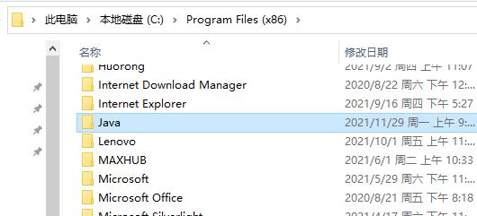二、下载JAVA开发工具包JDK
下载jdk1.8
三、手动安装JDK
1.使用资源管理器解压JDK文件(速度较慢，建议使用其他解压软件)
(1)在下载好的JDK压缩包上右击-->打开方式-->Windows资源管理器。
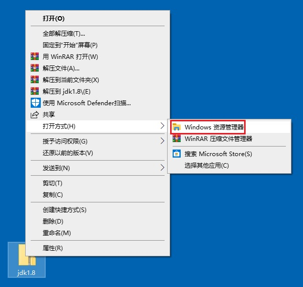(2)在窗口上方功能区中单击"全部解压缩"。
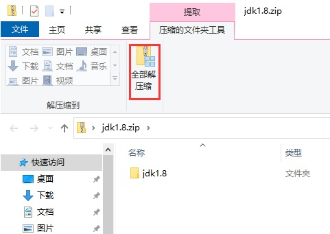(3)单击"浏览"，选择第一步建立的文件夹 C:\Program Files (x86)\Java ，单击"提取"。

2.复制JDK完整路径
(1)打开Windows资源管理器，找到提取出的文件，进入JDK的路径下。单击地址栏右边的空白处。
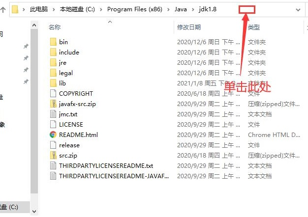(2)单击后，地址栏显示为JDK的完整路径，复制该完整路径。
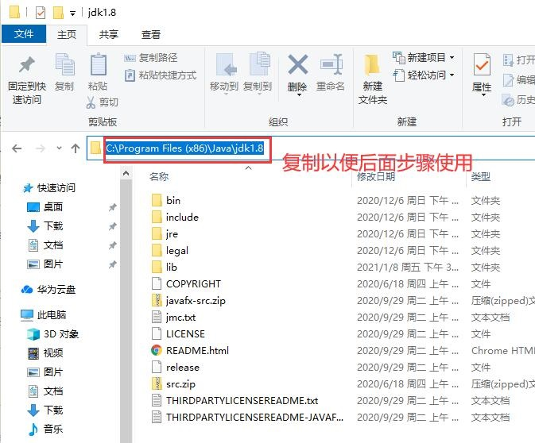四、配置环境变量
1.打开"环境变量"窗口
(1)左侧"此电脑"右击-->属性。
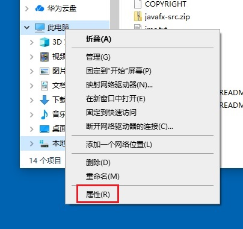(2)页面滚动到最下面，单击"高级系统设置"。
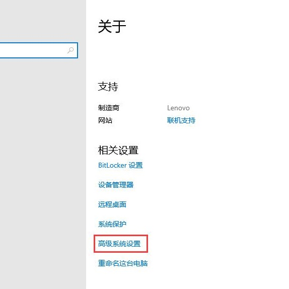(3)依次单击"高级"-->"环境变量"。
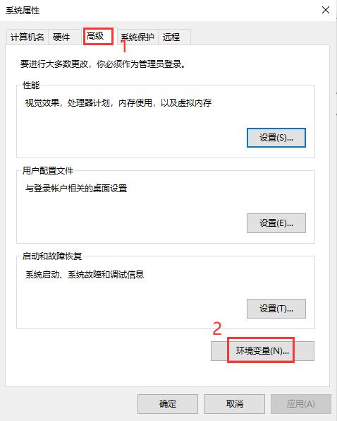2.新建JAVA_HOME变量
单击"系统变量"下方的"新建"按钮，在弹出的"新建系统变量"窗口中分别填写。
其中变量名是固定的：JAVA_HOME
。变量值粘贴刚才复制的完整路径。
然后单击确定。
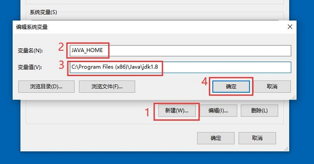
3.修改Path变量
(1)双击"系统变量"中的"Path"变量，在弹出的"编辑环境变量"窗口中单击"新建"。
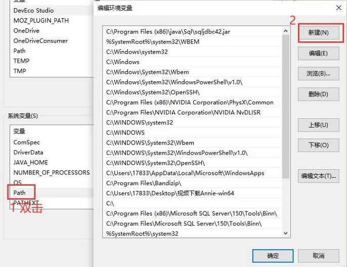(2)填入内容：%JAVA_HOME%\bin ，然后单击确定，回到"环境变量"窗口。
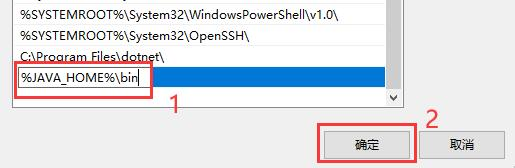4.两次"确定"
在"环境变量"窗口单击"确定"，回到"系统属性"窗口。
在"系统属性"窗口单击"确定"。
五、下载JAVA开发环境Eclipse
下载eclipse
六、手动安装Eclipse
1.使用资源管理器解压Eclipse文件(速度较慢，建议使用其他解压软件)
(1)在下载好的Eclipse压缩包上右击-->打开方式-->Windows资源管理器。
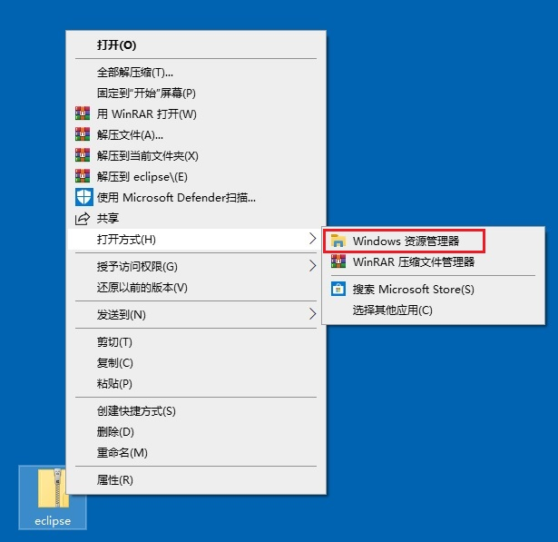(2)在窗口上方功能区中单击"全部解压缩"。
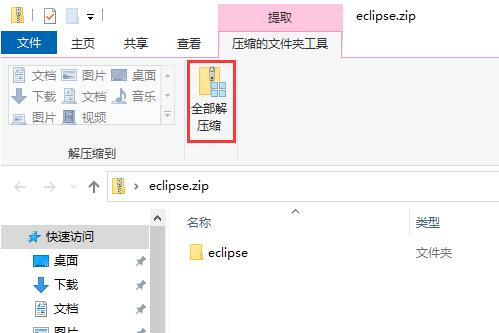(3)单击"浏览"，选择第一步建立的文件夹 C:\Program Files (x86)\Java ，单击"提取"。